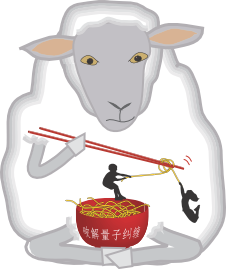

Rump Session
The rump session will be held in a 45 min session during the conference dinner. Participants are encouraged to give short presentation on new results from tomorrow’s arXiv, work in progress, and other topics of interest to the QIP community, e.g., workshop announcements. The length of a rump presentation should not be longer than 3min for a presentation and even shorter for an announcement. Interested conference participants are asked to submit a title until Tuesday evening using the form below.
The session will be in a relaxed atmosphere by the beach. In order to contribute to this spirit, non-technical and humorous contributions are highly encouraged.
Rump Session presentations are submitted via our webpage and a notification email will be sent by Wednesday morning.
Session Chair: Valerio Scarani (CQT)
